20.07.2025
Im Zuge meiner Schleswig Wikinger Tour und den damit einhergehenden Recherchen traf ich auf die Webseite "TIB AV-Portal" (Technische Informationsbibliothek) und in deren Angebot auf einige Beiträge zu Haithabu. Dort kann man mehrere Filme abrufen, so "Wikingerhafen - Wikingerschiff. Archäologische Untersuchungen in Haithabu" - 1980 - 21:25 Minuten / "Haithabu - Untersuchungen im Hafen und Bergung eines Wikingerschiffes" - 1980 - 40:19 Minuten / "Die Glocke von Haithabu - Fund und Nachguß einer frühmittelalterlichen Bronzeglocke" - 1978 - 23:52 Minuten.
15. - 20.07.2025
Am 14.07.2025 war ich von meinem Schleswig Wikinger Tripp wieder wohlbehalten zurück. Die zahlreichen Erlebnisse und Eindrücke versuche ich jetzt zeitnah auf dieser Seite einzubinden. Da ich auch mal gefragt wurde, ob ich keinen QR Code zu meiner Wikinger Webseite hätte, habe ich direkt mal einen erstellt und auf der Startseite eingefügt. Darüber kann ich zukünftig auch viel einfacher Kontaktpersonen auf meine Webseite verweisen.
Ein besonderes Highlight für mich war die Teilnahme an einem Segeltörn auf der Schlei mit dem Wikingerschiff "Sigyn", der am Sonntag, 13.07.2025, zw. 10.30 und 12.30 Uhr, stattfand. Eher per Zufall erfuhr ich erst am Samstag auf dem Sommermarktes in Haithabu in einem Gespräch mit Crewmitglied Kai von den Törnangeboten und bekam glücklicherweise kurzfristig einen freien Platz an Bord - Kostenpunkt: 30.- . Skipper Frieder hat mir nach dem Törn dankenswerterweise diese zweiseitige Karte zur Verfügung gestellt, aus der eigentlich alle relevanten Informationen hervorgehen.
Es handelt sich um einen 1:1 Nachbau der dänischen "Skuldelev 3" - einem wikingerzeitlichen Küstensegler - der 1962 aus dem Roskildefjord mit vier anderen Schiffen unterschiedlicher Bauart geborgen wurde.
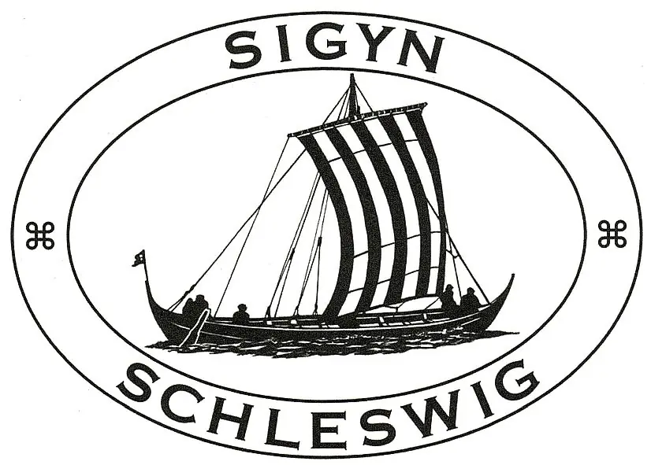
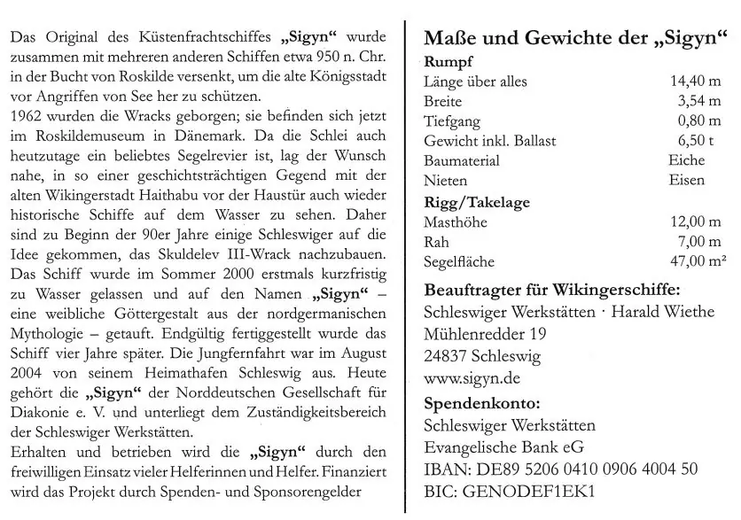
Hier habe ich einige Fotos und Videos von dem Segeltörn für euch.
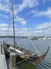
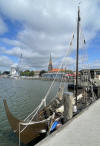
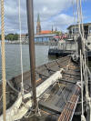
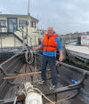
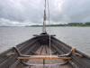
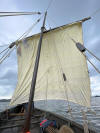
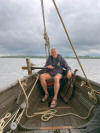
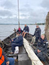
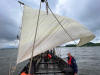
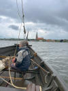
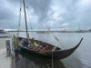
/ /
Erstmals habe ich bei meinem diesjährigen Schleswig Wikinger Tripp auch den Nachbau des wikingerzeitlichen Seesperrwerks an der Badestelle Stexwig am 11.07.2025 besucht. Informationen des Amt Haddeby / der Gemeinde Borgwedel und eine Fotostrecke zu dem Nachbau findet man hier - Eröffnung offenbar am 16.11.2021.
Am Stexwiger Strand entstand der Nachbau eines Segmentes des Seesperrwerks von Reesholm (Seesperrwerk des Danewerks. In: KuLaDig, Kultur.Landschaft.Digital. URL: https://www.kuladig.de/Objektansicht/KLD-271245 - Abgerufen: 16. Juli 2025 - Dortige Infos als pdf-Datei), welches nahe der heutigen Fahrrinne in Ost-West Richtung stand. Das Sperrwerk wurde als Teil des Danewerkes in den Jahren 735-738 n. Chr. errichtet. Die Konstruktion wurde in der Neuzeit erstmals wieder bei Baggerarbeiten in den 1925 entdeckt, damals jedoch von der zuständigen Stelle in Kiel als Reste einer Fahrrinnenbefestigung gedeutet. Erst 1996/97 wurde durch erneute Untersuchungen ein Zusammenhang mit dem Danewerk deutlich, da die Dendrochronologischen Untersuchungen ein Fälldatum der Bäume zwischen 730-740 n. Chr. erbrachte.
Mittlerweile ist durch weitere Untersuchungen eine Gesamtlänge von 670 m nachgewiesen worden, ev. sogar eine Länge von weiteren 950 m, wenn eine Verbindung zwischen der Stexwiger Enge und den weiter östlich gefundenen Fragmenten bestand. Das Seesperrwerk von Reesholm ist Bestandteil des Weltkulturerbes Danewerk-Haithabu - Detailseite. Mit der Errichtung des 1:1 Nachbaus wurde die Dimension den interessierten Besuchern näher gebracht.
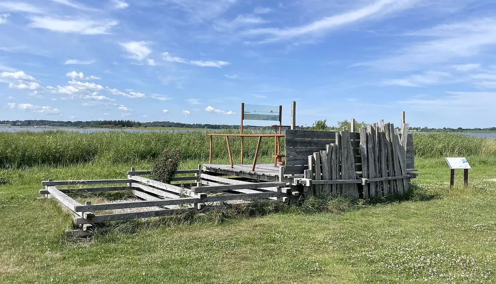
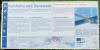 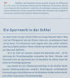 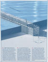 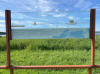 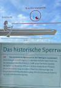 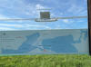 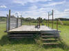 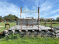
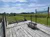 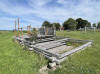 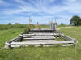 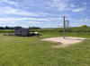 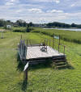 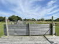 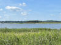 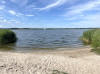
Von Dr. Willi Kramer gibt es auf seiner Webseite einige Ausführungen seiner damaligen - auch tauchtechnischen - Untersuchungen zum Seesperrwerk, die er zwischen 1992 und 2002 durchführte.
Offenbar zwischen 2017 und 2020 wurde durch das Projekt "Baltic Sea Region Integrated Maritime Cultural Heritage Management" (kurz: BalticRIM) über eine Spezialboje auf Höhe des unter Wasser befindlichen frühmittelalterlichen Seesperrwerks des Danewerks vor der Halbinsel Reesholm geforscht, ob mit den an der Boje angehängten Hölzern ein Befall durch die Schiffsbohrmuschel durch saisonal-bedingte Schwankungen im Salzgehalt stattfindet. Über ein Ergebnis habe ich aber bislang bei meinen Online Recherchen nichts gefunden.
Zur Thematik: Bericht des Archäologische Landesamt Schleswig-Holstein (ALSH)
Ausstellung "Wikingerdämmerung - Zeitenwende im Norden" im Kreuzstall von Schloss Gottorf - 16.04. bis 02.11.2025
Das war natürlich ein Hauptgrund für meinen diesjährigen Schleswig Wikinger Tripp.
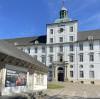
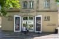
Den Ausstellungskatalog hatte ich mir unmittelbar nach seinem Erscheinen im April vorab beim Verlag besorgt und zügig durchgelesen. Die Ausstellung selbst habe ich während meines Aufenthaltes in Schleswig zweimal besucht (Eintritt 12 ), wobei ich beim 2. Besuch auch eine Führung (60 Minuten/4 )gebucht hatte.
Die beiden eingebundenen Gebäude auf der Schlossinsel, der Kreuzstall und der Reitstall (mit der eigentlichen Ausstellung), hatte ich zuvor noch nicht betreten. Im Kreuzstall war nach der Kasse und einem kleinen Shop das "Kunstwerk" mit dem Titel "Battle: Reloaded" von Margret Eicher (*1955)zu sehen. Es füllt mit 30 Metern Länge und 1,20 Metern Höhe einen ganzen Raum. Das Mammutwerk ist inspiriert vom Teppich von Bayeux. Dieser ca. 68 Meter lange Tuchstreifen aus dem 11. Jahrhundert schildert wie bekannt mit unzähligen Stickereien die Eroberung Englands durch die Normannen. Laut 25-seitiger erklärenden Broschüre - im Shop für 1 erhältlich - verbindet diese neuzeitliche Tappisserie das mediale Gedächtnis der Kunst- und Kulturgeschichte mit dem Bildrepertoire populärer Medien.
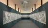
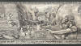
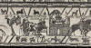
Am unteren Rand sind die Ereignisse vom Teppich von Bayeux wiedergegeben.
Danach geht's - der König weist den Weg -
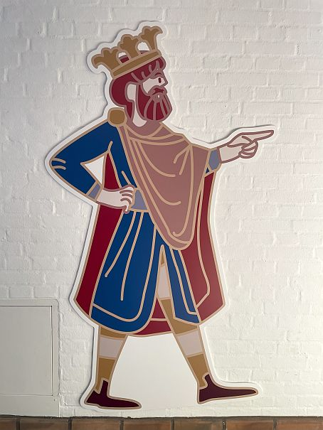
durch einen Zelttunnel in den Reitstall, wo die Ausstellung nach rechts beginnt. Ich persönlich fand schon die Thematik sehr interessant, weil es dazu meines Erachtens relativ wenig (deutschsprachige) Informationen gibt. Auch die Konzeption, die Darbietung in den Vitrinen - dreisprachig beschriftet (D/DK/GB), dazu noch per Tablettbildschirm in Gebärdensprache - die großflächigen Landkarten an den Wänden, dazu auch mehrere Filmchen in Comicformat und die drei Schiffsrumpfquerschnitte im Vergleich (, alles in allem gefiel mir sehr gut. Hier habe ich einige Fotografien von ausgewählten Objekten.
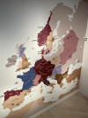
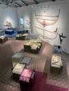
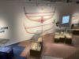
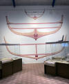
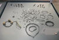
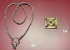
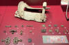
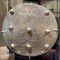
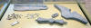
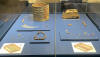
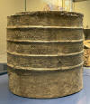
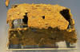
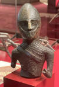
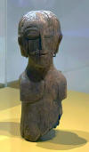
Schleswiger Domstein - Kalkstein - Höhe: 68 cm / Breite: 36 cm / Dicke: 13 cm / Runenhöhe: 7,5 - 10 cm
DK Runer Eintrag - Inschrift: hat den Stein gesetzt zur Erinnerung an tot und Guðmundr schnitzten die Runen. (Er) ruht in Skia in England. Christ
Kompletter Scan der Abhandlung "Der Runenstein im Schleswiger Dom" erläutert von R. v. Liliencron (*08.12.1820 - 05.03.1912) und Prof. Ludv. F. A. Wimmer (*07.02.1839 - 29.04.1920, Philologe und Runenforscher) - herausgegeben von dem Museum Vaterländischer Alterthümer in Kiel - 1898 - Pdf frei von Urheberrechten aufgrund dess Alters.
Replik des Domschreins von Cammin - um 1000 - L 56,12 cm / Br. 35,24 cm - mit Elchgeweihplatten im Mammen-Stil verzierter Reliquenschrein mit vergoldeten Bronzestreifen - um 1175 in den Domschatz des Bistums Kamień gelangt
Mit dem nötigen Kleingeld - 5400 für eine bemalte Gipfsform - kann man sich eine solche Kopie von diesem Schrein auch heute noch in der Gipsformerei der Staatlichen Museen zu Berlin bestellen. Der Schrein ist in den Kriegswirren von 1945 verloren gegangen. Fotos - in sw - des Originals kann man sich hier abrufen.
Einige originale Handschriften in der Ausstellung waren von der Königlichen Bibliothek Kopenhagen und dem Arnamagnäanischen Institut an der Universität Kopenhagen entliehen. Eigene Fotos braucht man da nicht, denn die ausgestellten Seiten sind in bester Qualität digitalisiert im Internet verfügbar.
Hier zunächst vier verschiedene Fragmente der Gesta Danorum von Saxo Grammaticus (*um 1160 - nach 1216) auf Pergament - Katalog 161 / 162 / 163 - NKS 570 2°: Saxo, Gesta Danorum, fragmenta recentiora
Wie man gut erkennen kann sind dies die vier Fragmente in der Vitrine. Im Katalog - S. 123 - ist vom "Plesner Fragment" (das Blatt mit dem Loch drin) allerdings die andere Blattseite abgebildet.
Von den altisländischen Handschriften - um 1300 entstanden - waren von der "Knýtlinga saga", AM 20 b I fol., die Seiten 1v-2r und von der "Skjǫldunga saga", AM 1e beta I fol., die Seiten 2v-3r ausgestellt.
Der obere Bereich der Ausstellung zum Teppich von Bayeux ist über zwei verschiedene Treppen, auch mittels Aufzug für Personen mit Behinderung/Rollstuhl, erreichbar. Dort wird umlaufend eine fotografische Kopie des kompletten Teppichs von Bayeux, die auf Holzpanele aufgedruckt wurde, ausgestellt. Dazwischen sind mehrere Vitrinen mit verschiedenen Aspekten aufbereitet.
Hinweis: Von September 2026 bis Juni 2027 wird der Wandteppich im British Museum in London zu sehen sein. Aufgrund von Renovierungsbedarf des Museums von Bayeux müsste der Wandteppich ansonsten eingelagert werden. Im September 2025 wird das empfindliche Stück daher in ein Depot gebracht und für den aufwendigen Transport nach Großbritannien vorbereitet werden.
Es wird dabei insbesondere auf die Person Dr. Herbert Jankuhn (*08.08.1905 - 30.04.1990) eingegangen, der u.a. für Haithabu / Danewerk als Archäologe und Direktor des Museums vorgeschichtlicher Altertümer in Kiel zweifelsohne sehr viel geleistet hat, aber mit seinen Verbindungen zum SS-Ahnenerbe, in dessen Auftrag er in Begleitung weiterer Wissenschaftler im Juni 1941 die französische Kleinstadt Bayeux zur Dokumentation des Teppichs aufsuchte, den Nazis und deren Ideologien sehr nahe stand. Jankuhn wurde, um ihm seine Arbeit zu erleichtern, damals 35-jährig, zum SS-Sturmbannführer ernannt. "Die Gruppe traf am 08.06.1941 in Bayeux ein. Am 13.06.1941 begannen im Hôtel du Doyen, wo der Teppich von Bayeux seit Kriegsbeginn am 01.09.1939 in einem Schutzraum eingelagert war, die Arbeiten. Man suchte alsbald nach einem geeigneteren Ort für die Untersuchung, worüber der Teppich am 23.06. in das Kloster Mondaye gebracht wurde (82 km südlich von Bayeux), wo er bis zum 01. August blieb. Die Gruppe arbeitete täglich - auch sonntags, von 09.00 bis 20.00 Uhr. Der Textilarchäologen Karl Schlabow (*27.04.1891 - 30.09.1984) hat ihn mehrfach vermessen und kam auf eine Länge von 68,45 m. Er studierte die Stickstiche und den Stoff der Unterlage, nahm zahlreiche Proben und reiste bereits am 18. Juni 1941 wieder ab. Der Berliner Fotograf und SS-Sturmbannführer Kurt Alber (*28.05.1908 - 30.05.1961) fotografierte den Teppich vollständig in Schwarzweiß und Farbe. Bevor er überstürzt nach Berlin zurückkehrte, wurde er am 20. Juli durch Frau Uhland ersetzt. Diese hielt sich vom 24. bis 31. Juli in Mondaye auf und fotografierte die Unterseite der Stickerei. Gleichzeitig drehte der Militärjournalist SS Loeb zwei Dokumentarfilme über den Teppich. Danach wurde das gesamte Material von einer Gruppe unter der Leitung der Professoren Stänge und Bunnes untersucht, nachdem Jankuhn nach Russland abgereist war (dort war er ab Dezember1941 im Einsatz). Nach der Abreise der Deutschen wurde der Teppich zurück nach Bayeux und in den Bunker von Schloss Sourches im Department Sarthe gebracht." Quelle: Der Teppich von Bayeux - Ein mittelalterliches Meisterwerk, von Pierre Bouet & François Neveux, 2018, S. 216 ff. - Der zweite Weltkrieg und die Mission Jankuhn.
In dem Zusammenhang möchte ich nochmals auf den sehr interessanten, online verfügbaren, Artikel "Nathalie Neumann - Der Teppich von Bayeux zurück im Bild - Restitution von Aufnahmen für das Ahnenerbe aus Privatbesitz 1994 und 2019 - erschienen in: Fotogeschichte, Heft 173, 2024" verweisen.Hier einige Passagen aus der geschilderten Geschichte des Jahres 1066.
Das zweite Foto oben zeigt die Szene, die in der Ausstellung auf einem Glasplattennegativ (hier links) zu finden ist. In der Vitrine ist auch noch ein weiteres Negativ, von insgesamt 431 Aufnahmen (Querformat 18 x 24 cm) dieser Art, ausgestellt, Aufnahmen die im Sommer 1941 im Rahmen des SS-Ahnenerbe-Projektes in Bayeux aufgenommen wurden.
Durch den Kunstmaler und Grafiker Herbert Jeschke (*08.09.1900 - 24.06.1964) wurde ein Detail des Teppichs, vier Bogenschützen aus Williams Heer, 1943 in Bayeux als Aquarell auf Karton (49,5 x 54 cm) gemalt, das nebenan aufliegt.
Nun komme ich zu dem vor Wochen als "Sensationsfund" gemeldetem Original Stückchen von der Unterseite des Teppichs von Bayeux - siehe meine Beiträge vom 25.03.2025 und 03.03.2025. Es handelt sich um eine etwa DIN-A6-große Glasplatte mit einzelnen, nur wenige Zentimeter großen Fasern aus der Unterseite des Teppichs. Das Landesarchiv Schleswig-Holstein in Schleswig hat dieses Fundstück des Teppichs von Bayeux im Nachlass des Textilarchäologen Karl Schlabow (*27.04.1891 - 30.09.1984) entdeckt, der bereits 2022 den Weg ins Archiv fand. Nach Auskunft des Archivs war Schlabow Teil der Wissenschaftlergruppe, die 1941 von der SS-Organisation Deutsches Ahnenerbe mit einer aktuellen Dokumentation des Teppichs beauftragt wurde. Im Zuge dieser Arbeiten sei das entdeckte Fragment von der Unterseite des Teppichs entnommen worden.
Vor Ort ging das nicht besser - zur Verbesserung der Bildqualität / Entfernung der Handy-Reflexion habe ich einen "Fachmann" um Hilfe gebeten - Dankeschön Jürgen! - ich habe da auch noch etwas rumgeschraubt, naja nicht optimal, aber ganz ok. Im Ausstellungskatalog findet man auf der S. 154 ein Profifoto.
Herbert Jeschke, Herbert Jankuhn und Karl Schlabow (von links nach rechts) bei der Untersuchung des Teppichs von Bayeux im Sommer 1941 / Karl Schlabow bei seinen Studien am Bildteppich
05.07.2025
Sommermarkt Haithabu 2025
Nächste Woche, Donnerstag, 10.07. bis Sonntag 13.07.2025, jeweils zw. 9.00 und 17.00 Uhr, gibt es im Rahmen des diesjährigen Sommermarktes in Haithabu wieder zahlreiche Workshops, bei denen man wikingerzeitliches Handwerk ausprobieren oder anderen dabei über die Schulter schauen können.
Im Mittelpunkt des Marktes stehen natürlich wieder Dutzende Händlerinnen und Händler aus Deutschland und den angrenzenden Ländern, mit einem einzigartigen Angebot an Repliken von wikingerzeitlichen Objekten. Viele Marktteilnehmende orientieren sich bei der Herstellung und Auswahl ihrer Produkte an archäologischen Funden aus Haithabu. Das Marktgeschehen mit zahlreichen Angeboten und Veranstaltungen drum herum dazu gehört auch eine tägliche Waffenshow - ist inmitten des historischen Geländes von einer einzigartigen Atmosphäre geprägt. Alle Infos zum Sommermarkt gibt es HIER. Ein Ticket vorab können Sie HIER erwerben. Am kommenden Dienstag reise ich mit der Bahn an und werde Schleswig um 13.14 Uhr erreichen. In einer Ferienwohnung im Wikingturm werde ich erstmals residieren und die Gegend nach zuletzt Juni 2022 mal wieder mehrere Tage lang erkunden. Natürlich geht es auch in die aktuelle Ausstellung "Wikingerdämmerung - Zeitenwende im Norden" im Kreuzstall von Schloss Gottorf. Den Ausstellungskatalog habe ich mir längst beim Michael Imhof Verlag besorgt und auch bereits gelesen.
Außerdem will ich erstmals das "Fenster in die Vergangenheit an der Stexwiger Badestelle besuchen, wo eine Visualisierung des historischen Seesperrwerks gegenüber der Halbinsel Reesholm errichtet wurde.
Am Stexwiger Strand entstand der Nachbau eines Segmentes des Seesperrwerks von Reesholm, welches nahe der heutigen Fahrrinne in Ost-West Richtung stand. Das Sperrwerk wurde als Teil des Danewerkes in den Jahren 735-738 n. Chr. errichtet. Die Konstruktion wurde in der Neuzeit erstmals wieder bei Baggerarbeiten in den 1925 entdeckt, damals jedoch von der zuständigen Stelle in Kiel als Reste einer Fahrrinnenbefestigung gedeutet. Erst 1996/97 wurde durch erneute Untersuchungen ein Zusammenhang mit dem Danewerk deutlich, da die Dendrochronologischen Untersuchungen ein Fälldatum der Bäume zwischen 730-740 n. Chr. erbrachte.
Mittlerweile ist durch weitere Untersuchungen eine Gesamtlänge von 670 m nachgewiesen worden, ev. sogar eine Länge von weiteren 950 m, wenn eine Verbindung zwischen der Stexwiger Enge und den weiter östlich gefundenen Fragmenten bestand. Das Seesperrwerk von Reesholm ist Bestandteil des Weltkulturerbes Danewerk-Haithabu. Mit der Errichtung des 1:1 Nachbaus wurde die Dimension den interessierten Besuchern näher gebracht.
Natürlich will ich mich auch beim Neubau des Danevirke Museums umsehen. Bis zum Herbst 2026 soll das neue Gebäude mit insgesamt ca. 1.600 Quadratmetern Nutzfläche entstehen. Anschließend wird die neue permanente Ausstellung zum Danewerk eingerichtet. Sie wird mit ca. 800 Quadratmetern mehr als doppelt so groß wie die im alten Museumsgebäude sein. Hinzu kommt erstmals eine Sonderausstellungsfläche. Das neue Vermittlungszentrum eröffnet erwartungsgemäß im Frühjahr 2027.
Dann gäbe es da auch noch das Stadtmuseum Schleswig und das Nydam-Boot nebst Moorleichen auf Schloss Gottorf. Langeweile wird mir sicher nicht aufkommen! :-)
05.07.2025
MOESGAARD WIKINGERTAGE vom 24. 27. JULI 2025 - täglich 10-17 Uhr - Tageskarte Erwachsene 195 DKK (= ca. 26)
Tauchen Sie ein in die Welt der Wikinger. Bei den Moesgaard Wikingertagen wird Geschichte zum Leben erweckt. Der Duft von Rauch und frisch zubereiteten Speisen vermischt sich mit dem Klang des Schmiedehammers und den Klängen nordischer Instrumente. Der Wikingerplatz ist voller Leben mit Musik, Tanz, Geschichten und Theater für Jung und Alt.
Es wird geschlachtet und Lebensmittel werden wie vor tausend Jahren gekocht und zubereitet. Neu in diesem Jahr ist der neue Runensteinplatz und "Die Prophezeiung der Völva" eine eindrucksvolle und sinnliche Theateraufführung für Familien mit Kindern, die zeigt, wie die Völves der Wikingerzeit Visionen hatten und vorhersagten.
Im benachbarten Museum werden ab 04.07.2025 neue Ausgrabungsfunde ausgestellt. In Lisbjerg bei Århus hat Moesgaard 30 Gräber aus der Wikingerzeit ausgegraben. Die Archäologen fanden darin wertvolle Gegenstände, die die Toten als Grabbeigaben auf ihrer Reise nach Hel oder Walhall mitgenommen hatten. Die persönlichen Gegenstände bieten einen einzigartigen Einblick in die Welt der Wikinger. Bei den Toten in den Gräbern handelte es sich vermutlich um die Frauen und Männer, die auf dem Hof des Adligen lebten. Den Verwandten des Adligen wurden Waffen, Perlen, Münzen und andere Wertgegenstände mitgegeben. Eine Frau, möglicherweise die Ehefrau des Adligen, wurde mit einem seltenen, eleganten kleinen Schrein bestattet. Er ist ca. 32 x 32 cm groß, besteht aus Holz vermutlich Eiche und hat Beschläge an den Ecken, Seiten und am Deckel sowie einen feinen Verschlussmechanismus. An mehreren Stellen finden sich Hinweise darauf, dass die Beschläge versilbert sind. An den Seiten, von den Ecken über den Deckel bis zum oberen Beschlag befinden sich feine Nieten. In dem Schrein befinden sich eine ca. 14 cm lange Schere, eine silberne Filigranperle, möglicherweise eine Brosche, eine Nadel und vermutlich ein Band mit Goldfaden - siehe zum Vergleich meine Ausführungen vom 20.02.2024 zum "Bamberger Schrein".
Bildquelle: Moesgaard Museum / Louise Hilmar - Lizenz: CC BY-SA 4.0
Ausgewählte Objekte aus den Gräbern wie Keramik, Wetzsteine, Münzen und Perlen sowie eine Replik des Schreins können besichtigt werden. Viele der anderen Funde werden noch sorgfältig konserviert und können daher noch nicht ausgestellt werden. Die Grabbeigaben belegen, dass die Wikinger in Lisbjerg die altnordischen Götter Odin, Thor und Freya verehrten. Die Funde belegen zudem, dass die Grabstätte aus der späten Wikingerzeit im 9. Jahrhundert stammt kurz bevor das Christentum in Dänemark Fuß fasste.
02.07.2025
Heute stieß ich auf den Podcast mit dem Titel "Wikinger - Mythos und Wahrheit" aus der Reihe "Terra X History - Der Podcast" der am 27.06.2025 veröffentlicht wurde und über 1:00:04 Stunde geht. Die Moderation liegt bei Mirko Drotschmann, der in meinem Wohnort geboren wurde, und zu Wort kommen hier in der meines Erachtens absolut hörenswerten Reportage u.a. Dominik Waßenhoven (Historiker) und Matthias Toplak (Leiter des Haithabu Museums).
Die (überarbeitete) Dissertation von Dominik Waßenhoven mit dem Titel "Skandinavier unterwegs in Europa (1000-1250) - Untersuchungen zu Mobilität und Kulturtransfer auf prosopographischer Grundlage" aus dem Jahr 2006 kann man sich kostenfrei als durchsuchbare pdf-Datei downloaden. Über die Webseiten von Herrn Waßenhoven stieß ich erstmals auf das Buch von Cat Jarman (Bio- und Feldarchäologin am Institut für Anthropologie und Archäologie der Universität Bristol) mit dem Titel "Flusskönige - Die Wikinger auf der Seidenstraße - Eine Reise von Skandinavien bis nach Indien", das 2021 mit dem Originaltitel "Riverkings" erschien und ins Deutsche übersetzt am 31.10.2024 veröffentlicht wurde (432 Seiten - 30 Abbildungen und Karten - Maße: 21,8/14,4/3,8 cm - 28.- ). Das werde ich mich mir mal nachher direkt in einer Buchhandlung besorgen.
Von Matthias Toplak finden sich aktuell zwei Podcasts bei Spotify zur Thematik Wikinger. Über 22:59 Minuten geht es in der Folge mit dem Titel "Wikinger verstehen: Aussehen, Beutezüge, Kultur - Interview mit Dr. Matthias Toplak" und über 36:34 Minuten kann man die Folge "#12 Die Wikinger kommen - Wer wir sind und warum das nicht klappte".
Heute ab 19.00 Uhr kann man sich das Interview "Viking Burials: Gotland and Beyond with Matthias Toplak" im Videoblog 'Archaeodeath' von Prof. Howard Williams abrufen. Matthias Toplak schreibt auf seiner Webseite dazu: "Prof. Williams lehrt an der Universität Chester und ist sicherlich der Vorreiter in der Forschung zur 'burial archaeology', zum Umgang mit Tod und Bestattungen im europäischen Frühmittelalter. Darüber hinaus ist er enorm aktiv in der populären, medialen Vermittlung von Wissen zur Archäologie und zum Frühmittelalter. Ich schätze, dass kein anderer Wissenschaftler meine Forschung in den letzten Jahren so geprägt hat, wie er. Daher war es für mich ein persönliches Highlight, mit ihm über die Archäologie der Wikingerzeit, Gotland im Speziellen und auch das heutige populäre "Nachleben" der Wikinger, das 21st-Century-Viking-Age zu sprechen."
25.06.2025
Gestern las ich in verschiedenen Internet Nachrichtenportalen die Information, wonach im Magdeburger Dom aktuell das Grab Otto I. des Großen (*23.11.912 - 07.05.973) restauriert wird. Die Arbeiten dazu begannen bereits Ende März und im Zuge dessen wurde nun Mitte Juni auch der im steinernen Sarkophag befindliche Holzsarg geöffnet. Darin befinden sich verstreut liegende menschliche Überreste eines männlichen, älteren Individuums mit für das Mittelalter überdurchschnittlicher Körpergröße von 1,79 cm ob es sich dabei tatsächlich um die des Kaisers handelt, soll nun geklärt werden. Die Forscher sprechen von einem "der spannendsten Skelette des Abendlandes" und hoffen, das Gesicht Ottos des Großen rekonstruieren zu können. Nach den Untersuchungen sollen die sterblichen Überreste wieder in Magdeburg beigesetzt werden.
https://www.mdr.de/nachrichten/sachsen-anhalt/magdeburg/magdeburg/grab-kaiser-otto-sanierung-kultur-news-100.html
05.06.2025
Über den E-Mail Newsletter von "Museum Sydøstdanmark" kam heute die Info rein, wonach am Samstag, 28.06.2025, das neue Museum zur seeländischen Wikingerburg "Borgring" erstmals seine Türen für die interessierten Besucher öffnet. Die praktischen Informationen zu den Öffnungzeiten, dem Eintrittspreis usw. finden sich über diese Webseite. Die Adresse lautet: Ringstedvej 190, Lellinge, 4600 Køge.
Bildquelle: Borgring - von Skråfoto - gehört zum Klimadatastyrelsen - Lizenz: CC BY 4.0
02.06.2025
Wie ich heute feststellen durfte, ist die lange angekündigte Erneuerung der Webseite von "Danmarks Kirker" inzwischen umgesetzt worden. Seit 1933 sind inzwischen etwa 2/3 der dänischen Kirchen ausführlich - in dänischer Sprache, manchmal mit einer englischen Zusammenfassung - beschrieben und mit Bildmaterial versehen worden. Diese wertvollen Informationen sind seit Jahren auch online abrufbar und präsentieren sich nun in neuem Gewand mit vereinfachter Suchfunktion. Ich nutze diese ergibige Quelle seit Jahren für meine Recherchen und sage an dieser Stelle mal sehr gerne Danke / Mange tak!
Über die auf deren Webseiten eingebettete Karte von Dänemark kann man sich schnell einen Überblick darüber verschaffen welche Landesteile schon abgearbeitet wurden und welche nicht. Beispielhaft verweise ich hier einmal auf die im Jahr 2022 veröffentlichte neue Ausarbeitung - 143 Seiten starke und reichlich bebildert - zur Kirche in Jelling.
30.05.2025
Mit Erstausgabe 28.05.2025 sind in Dänemark zwei Briefmarken erschienen, die die dänischen Ringburgen "Trelleborg" und "Aggersborg" im Rahmen der europaweiten Briefmarken Reihe "EUROPA 2025 - National Archaeological Discoveries" zum Thema haben.
Bildquelle: postnord.dk
Am 24.04.2025 erschienen für Schweden zwei Briefmarken in der gleichen Reihe, die einige Grabbeigaben (Tafel 119 u.a.- S. 131 in der pdf-Datei) aus dem Grab 632 (Text ab S. 210 ff. - S. 252 ff. in der pdf-Datei) auf der Insel Birka zeigen.
Bildquelle: postnord.se
Die Färöer-Inseln brachten für diese Reihe ebenfalls zwei Briefmarken heraus - Erstausgabe 26.05.2025 - ein wikingerzeitliches Spielbrett aus Toftanesi mit dem einmal "Mühle" und auf der anderen Seite "Hnefatafl" gespielt werden konnte. Die zweite Briefmarke ziert eine Gewandnadel, die der älteste Nachweis für Besiedlungen auf den Färöer während der Wikingerzeit ist. Die auf den Briefmarken abgebildeten Objekte sind in den Ausstellungsräumen des Nationalmuseums der Färöer in Tórshavn zu sehen.
Bildquelle: Posta Faroe Islands
Einer der berühmtesten archäologischen Funde der Niederlande ist die 8,5 cm lange Fibula von Dorestad. Die Gewandnadel wurde um 800 n. Chr. hergestellt. Die Fibel wurde 1969 in einem Brunnen aus der Zeit von Dorestad gefunden, wo sich heute Wijk bij Duurstede befindet. Während der Herrschaft Karls des Großen (768814) war Dorestad die größte und reichste Handelsstadt der Niederlande. Die goldene Fibel ist mit verschiedenfarbigem Glas, Almandin-Edelsteinen, Perlen und Emaille eingelegt. Im Laufe der Zeit sind einige Steine verschwunden, ebenso wie die Nadel auf der Rückseite. In der Einlegearbeit sind verschiedene Formen zu erkennen, wie Kreuze, Voluten und ein kleiner Baum mit Blättern und Früchten. Die Kreuze der Edelsteine und Perlen deuten vermutlich darauf hin, dass die Brosche als subtile Propaganda für das in den Niederlanden immer beliebter werdende Christentum getragen wurde. Runde Fibeln wurden hauptsächlich von Damen getragen, und besonders hochrangige Damen warben für den neuen Glauben. Der Stil der Fibel von Dorestad entspricht der kirchlichen Goldschmiedekunst, die in burgundischen Werkstätten aus der Zeit Karls des Großen hergestellt wurde. Mit Erstausgabedatum 09.05.2025 wurde für diese Reihe diese Briefmarke herausgegeben. Die Fibel wird im Nationalmuseums für Altertümer in Leiden aufbewahrt.
Bildquelle: postnl.nl
Die kooperierenden Postunternehmen in Europa geben seit über 65 Jahren Briefmarken mit einem gemeinsamen Motiv heraus. Seit 2002 ist diese Ausgabe mit einem Designwettbewerb verbunden: dem EUROPA-Briefmarken-Designwettbewerb. Der Wettbewerb wird von PostEurop organisiert, der Organisation, in der alle europäischen Postunternehmen zusammenarbeiten. Das Thema der gemeinsamen europäischen Briefmarkenausgabe für 2025 lautet Nationale archäologische Entdeckungen. Über die Webseite von PostEurop kann man sich alle 56 teilnehmenden Briefmarken anschauen und seine Stimme für den EUROPA-Briefmarken-Onlinewettbewerb 2025 abgeben. Die Gewinner werden auf der PostEurop-Generalversammlung im Oktober bekannt gegeben. Seit dem Jahr 1956 gibt es diesen Wettbewerb bereits mit jährlich wechselnden Themen.
14.05.2025
Heute habe ich mal wieder der Webseite "Gotlandic Picture Stones" einen Besuch abgestattet und durfte feststellen, dass es nun keine Beta, sondern inzwischen die Vollversion ist. Auf deren Seiten heißt es (übersetzt): Diese digitale Edition der gotländischen Bildsteine wird, so hoffen wir, die Grundlagen für die Forschung zu diesen Denkmälern grundlegend verändern. Erstmals sind die Steine vollständig zugänglich. Darüber hinaus wird das Projekt den Denkmälern die lokale, nationale und internationale Aufmerksamkeit verschaffen, die sie verdienen. Im Hinblick auf die langfristige Bedeutung des Projekts ist es auch wichtig zu betonen, dass viele Steine noch immer ungeschützt den Elementen ausgesetzt sind. Die Schnitzereien werden nach und nach durch Regen, Frost und andere Einflüsse zerstört. Die digitale Edition bewahrt diese bedrohten Denkmäler für zukünftige Generationen und bietet eine hervorragende Grundlage für alle Schutzmaßnahmen dieses gefährdeten schwedischen Erbes.
Einige Informationen müssen aber wohl doch noch nachgereicht werden, denn bei einem Aufruf des Bildsteins "Klinte Hunninge 1" fiel mir auf, dass die detailierten Informationen bislang fehlen.
16.04.2025
Heute wurde die Ausstellung "Wikingerdämmerung. Zeitenwende im Norden" im Museum für Kunst und Kulturgeschichte auf Schloss Gottorf in Schleswig eröffnet. Vom NDR wird dazu eine Webseite mit einem eingebetteten Video (3:25 Min.) angeboten. Die Ausstellung wurde vom "Museum für Archäologie in der Stiftung Schleswig-Holsteinische Landesmuseen Schloss Gottorf (Ralf Bleile) und dem Leibniz-Zentrum für Archäologie (Dieter Quast)" organisiert und veranstaltet. Beim Imhof Verlag kann der Ausstellungkatalog - Werbetext - zum Preis von 29,95 versandkostenfrei bestellt werden, was ich dann auch gleich mal gemacht habe. Dann habe ich den nämlich schon eingehend studiert, wenn ich zwischen dem 08. und 14. Juli 2025 mal wieder in Schleswig weile. Für meinen Besuch in der Ausstellung habe ich mir bereits eine Termin für eine Führung reservieren lassen.
11.04.2025 - Nachtrag 12.08.2025
Wikinger als Ampelmännchen in Haddeby
Am Freitag, 11.04.2025, wurde die erste Wikinger-Ampel Deutschlands - NDR Beitrag mit einem Video (2:16 Min.) - offiziell eingeweiht. Die Fußgängerampel steht nahe der Zufahrt zum Haithabu-Museum in Haddeby an der B76 zwischen der St. Andreas Kirche und dem Gasthaus "Odins".
Wie ich bei meinem Wikinger Tripp im Juli 2025 feststellen durfte ist in der Innenstadt von Schleswig, am "Capitolplatz", jetzt auch solch eine Wikinger Fußgängerampel im Einsatz, die an der sicherlich meistfrequentierten Kreuzung Stadtweg/Bismarckstraße installiert werden konnte. Laut Meldung der sh:z vom 18.06.2025 ist dem dort so.
25.03.2025
Teppich von Bayeux: Sensationsfund in Schleswig präsentiert (über den Link kommt man zu einem ausführlichen Bericht mit Foto plus Video - 3:20 Minuten - des NDR)
So lautet die Überschrift zur heutigen Präsentation eines kleinen Originalstückes des Teppichs von Bayeux im Landesarchiv Schleswig-Holstein - siehe mein Beitrag vom 03.03.2025. Das Archiv in Schleswig hatte angekündigt, dass ein Stück des Teppichs von Bayeux im Nachlass des Textilarchäologen Karl Schlabow (*27.04.1891 - 30.09.1984) entdeckt wurde, der es während des Zweiten Weltkriegs nach Schleswig-Holstein gebracht hatte.
Optisch ist der Fund aus Schleswig allerdings nicht sonderlich spektakulär: Es handelt sich laut Landesarchiv um eine etwa DIN-A6-große Glasplatte mit einzelnen, nur wenige Zentimeter großen Fasern aus dem Teppich. Da der Teppich von Bayeux als französisches Kulturgut gilt, soll das in Schleswig gefundene Fragment laut Landesarchiv in diesem Jahr an Frankreich zurückgegeben werden. Zuvor soll es aber noch im Rahmen der Ausstellung ""Wikingerdämmerung Zeitenwende im Norden" (16. April bis 2. November 2025) auf Schloss Gottorf in Schleswig zu sehen sein, zusammen mit einer Nachbildung des gesamten Teppichs.
22.03.2025
Das "Varde Lokalhistoriske Arkiv" hat mir die Tage mitgeteilt, dass sie mein Material zu den Kopien der Jelling Runensteinen, die beim Varde Museum aufgestellt sind, haben drucken lassen und stellen es in ihrem Archiv für Interessierte zur Verfügung. Aber gerne doch!
In Varde stehen nämlich neben dem Varde Museum Kopien der beiden Jelling Runensteine die mit Farbe ausgemalt sind. Die Exemplare wurden vom Großhändler Cornelius Stau (*27.07.1845 - 18.12.1926 - link-LIVES - Melderegister - Bestattungsprotokoll) gestiftet, der am 11.05.1912 zusammen mit seiner Frau Elisabeth Juliette Christine Stau, geb. Madsen (*16.12.1854 -16.10.1915 - link-LIVES - Konfirmation - Melderegister - Bestattungsprotokoll) das Varde Museum gegründet / eröffnet hatte.
Bildquelle: arkiv.dk / Varde Lokalhistoriske Arkiv - Lizenz: CC BY-SA 4.0 - Fotografie um 1900 - Fotograf unbekannt
Da sie selbst nie Kinder hatten, gaben sie einen Teil ihres beträchtlichen Vermögens für das Varde Museum aus. Das Museumsgebäude wurde vom Schlossarchitekten Thorvald Jørgensen (*27.06.1867 - 15.05.1946 - link-LIVES)
Bildquelle: Wikipedia - Lizenz: Public Domain
entworfen, der unter anderem für die Zeichnungen für Schloss Christiansborg in Kopenhagen bekannt wurde. Mit dem Bau des Museums beauftragten sie einen der geschicktesten Maurer der Stadt, Henrik Ferdinand Hansen (*06.08.1836 - 06.10.1922, später auch Bürgermeister von Varde - link-LIVES).
Bildquelle: arkiv.dk - Lizenz: Public Domain
Cornelius Stau leitete selbst den Bau und die Einrichtung des Hauses, das 1914 fertiggestellt wurde. Er legte auch den Grundstein für die große Gemälde- und Kunstsammlung des Varde Museums viele der in der Sammlung des Museums enthaltenen Objekte stammten direkt aus den Wohnzimmern des Paares. Es waren nicht nur teure Antiquitäten, die Stau darin ausstellen wollte, sondern auch typische Dinge wie Jyde-Töpfe und Ethnographie aus entfernten Regionen wie Afrika und Grönland. Die Bürger Vardes sollten die Möglichkeit gegeben haben, sich im Museum niederzulassen und sich wohl zu fühlen, praktisch mit allem, von bildender Kunst über grönländische Schlittenhunde, Straußeneier aus Afrika, Bauernkultur und nicht zuletzt mit der Vorgeschichte Dänemarks. 1915 schenkte das Paar dem Museum ein Paar Kopien der Goldhörner von Gallehus.
Cornelius
und Elisabeth Stau
lebten in
Kopenhagen,
stammten aber ursprünglich beide aus der
Varde-Gegend.
Nach dem Tod seiner Frau beschloss Cornelius Stau, dem Museum
zwei exakte Kopien der beiden
Jelling-Steine
zu schenken.
Seinem Wunsch, das Geschenk an Elisabeths Geburtstag am 16.
Dezember zu enthüllen, wurde entsprochen und die monumentalen Abgüsse von
Hans Christian Berg direkt vor dem Haupteingang des Museums
aufgestellt.
Später wurden sie an ihren heutigen Standort nordöstlich des Museums verlegt.
In den 1970er Jahrenn war der Runologe
Erik Moltke
für die Farbwahl des großen Runensteins
verantwortlich.
Die Runensteine wurden Ende der 1970er Jahre schon einmal renoviert. Ende 2020 wurden sie von dem Museumsangestellten Bent Ejner Nielsen noch neu angemalt, bevor er nach 38 Jahren im Museum in Rente ging.
Über diesen Link kann man die - in dänischer Sprache gehaltene und reich bebilderte - Abhandlung "Vardes Jellingsten nu igen i farver - Af Lene B. Frandsen", die sich im "opdatering - Årbog for Vardemuseerne & Ringkøbing-Skjern Museum, 2020, S. 148-157" befindet, abrufen - übersetzt: "Vardes Jellingsten jetzt wieder in Farbe - Von Lene B. Frandsen". Darin wird die Geschichte zu den beiden Runensteinkopien umfassen erzählt und zur neuen Farbgebung berichtet.
16.03.2025
Wikingerschädel offenbaren schwere Krankheitsbilder
Die Bevölkerung Schwedens zur Wikingerzeit litt offenbar unter schweren Mund- und Kieferkrankheiten, Nebenhöhlen- und Ohrenentzündungen, Arthrose und vielem mehr. Dies geht aus einer Studie der Universität Göteborg hervor, in der Wikingerschädel mit modernen Röntgentechniken untersucht wurden.
© Carolina Bertilsson - Lizenz: CC BY 4.0 - Bild von mir zugeschnitten
Einen weiterführender, deutschsprachiger Artikel zur Thematik kann man z.B. über die Webseite von ANTIKE WELT & Archäologie in Deutschland abrufen. Die Original Publikation in englischer Sprache - am 18.02.2025 veröffentlich - findet sich hier: Bertilsson, C., Borg, E., Vretemark, M. et al. Findings from computed tomography examinations of Viking age skulls. BDJ Open 11, 18 (2025). https://doi.org/10.1038/s41405-025-00309-9.
14.03.2025
Auf der dänischen Insel Seeland kann man seit dem 06. Februar 2025 in Holbæk im Museum Vestsjælland das Gislinge Boot erleben, welches vom Nationalmuseum in Kopenhagen als Dauerleihgabe zur Verfügung gestellt wird. Das ca. 900 Jahre alte Gislinge Boot ist ein gut erhaltenes Beispiel für den Klinkerschiffsbau aus dem frühen Mittelalter, das laut den Forschern als das letzte Wikingerschiff oder als das erste Mittelalterschiff bezeichnet werden kann. 1993 wurden bei Entwässerungsarbeiten nahe Gislinge, einem Dorf am trockengelegten Lammefjord, die Überreste eines Bootes entdeckt. Der Lammefjord, heute landwirtschaftlich genutzt, war einst ein ausgedehntes offenes Wassergebiet, das mit dem größeren Isefjord verbunden war. Obwohl Mast und Takelage nicht gefunden wurden, war der Rumpf relativ intakt.
Bildquelle: Nationalmuseum - Lizenz: CC BY-SA 4.0
Obwohl es jahrhundertelang unter Schlick- und Sandschichten begraben lag, war die Form des Rumpfes überraschend gut erhalten. Es war sofort klar, dass das Boot aus der späten Wikingerzeit oder dem frühen Mittelalter stammte. Der Rumpf war aus überlappenden Planken und Eichenrippen gezimmertt, mit Eisen- und Holznägeln zusammengehalten, und hatte einen gestuften Steven alles typische Merkmale eines Bootes aus dem 11./12. Jahrhundert. Dies wurde durch die Dendrochronologie (Jahrringdatierung) bestätigt, die auf eine Bauzeit um 1130 hindeutete.
Das Gislinge Boot war stark abgenutzt, als es im seichten Wasser auf dem Grund des Lammefjords sein Ende fand. Das Boot, das immer wieder geflickt und repariert wurde, scheint nicht gesunken zu sein, sondern wurde nach schätzungsweise 50 Jahren Nutzung eher aufgegeben. Die Maße des Gislinge Bootes Länge: 7,7 m / Breite: 1,5 m / Tiefgang: 0,25 m / Tragfähigkeit: 1 Tonne.
Nach der Ausgrabung wurde das Boot an die Konservierungsabteilung des Nationalmuseums geschickt, wo ein langwieriger Konservierungsprozess begann. Der Baum, der über 800 Jahre lang durch den Schlamm des Fjords geschützt war, musste nun stabilisiert werden, um ausgestellt werden zu können.
Durch Imprägnierung mit Polyethylenglykol (PEG) und einem fortschrittlichen Gefriertrocknungsverfahren blieb die ursprüngliche Form des Gislinge Bootes erhalten. Ein langwieriger Prozess, der sich über mehrere Jahrzehnte erstreckte, da das Boot fast 20 Jahre in Imprägniertanks warten musste, bevor mit der Gefriertrocknung selbst begonnen werden konnte. Bei der PEG-Behandlung wurde das Wasser in den Holzzellen durch eine Art Wachs ersetzt, sodass das Holz beim Trocknen nicht zusammenfällt.
Die Gefriertrocknung erfolgte bei sehr niedrigen Temperaturen und dauerte mehrere Monate. Um sicherzustellen, dass die Planken ihre ursprüngliche Form behielten, wurden sie während der Gefriertrocknung, einer speziell für die Schiffskonservierung entwickelten Technik, in speziell angefertigten Formen fixiert.
Nach dem Trocknen wurde jedes Brett und jeder Rahmen gereinigt und die Fragmente sorgfältig wieder zusammengefügt, um die Struktur des Bootes wiederherzustellen. Die Arbeit erforderte äußerste Präzision, da das Boot stabilisiert werden musste, ohne seine charakteristischen Merkmale aus der Wikingerzeit und dem Mittelalter zu verlieren.
Das Ergebnis dieser jahrelangen Bemühungen ist, dass das Gislinge Boot heute als eines der am besten erhaltenen Boote seiner Zeit erscheint - Ein Bildnis des Schiffes in der Ausstellung des Museums
09.03.2025
Die Recherchemöglichkeiten über link-LIVES.dk sind für mich wirklich sehr hilfreich, führen aber nicht in allen Fällen direkt zum Erfolg, wie ich jetzt festgestellt habe. Oft braucht es ergänzende Schritte, um das Gesuchte zu finden. Insbesondere zu den in Kopenhagen geborenen oder gestorbenen Personen kann man dankenswerterweise auf weitere Hilfsmittel, die vom Rigsarkivet angeboten werden, zurückgreifen. Über die dort zum Download angebotenen Publikationen kann man herausfinden welche "Sogn (Kirchspiel)" für welche Straße innerhalb von Kopenhagen zuständig ist. Es werden dort Verzeichnisse mit dem Titel "Københavnske gader og sogne" für mehrere Jahre angeboten - 1787 / 1801 / 1840 / 1863 / 1870 / 1880 und 1890. Etliche Menschen sind auch in Frederiksberg verstorben, das zum Großraum Kopenhagen gehört. Über den betreffenden Google Eintrag findet man heraus, dass es dort alleine 9 "Sogn" gibt, die man dann nach und nach durchsuchen kann. Das hat bei mir z.B. zum Sterberegister der Person Johannes Steenstrup (Johannes Christoffer Hagemann Reinhardt Steenstrup, *05.12.1844 - 03.08.1935, dänischer Historiker - link-LIVES) in der Sankt Thomas Sogn zum Ziel geführt. Etwas umständlich, aber letzlich erfolgreich, da zuvor die Suche in "Rigsarkivet - Amt/Arkiv" - mit den Suchkriterien "København Amt / Frederiksberg sogn" im entsprechenden Kontraministerialbog (Døde mænd 1934 - Døde mænd 1939) kein Ergebnis erbracht hatte.
06.03.2025
Tusind tak Dánial! - Tausend Dank Dánial!
Innerhalb meiner Recherchen zu den Personen, die mit der Historie der Runensteine irgendwie verbunden sind, und die ich bisher nach Möglichkeit mit einem urheberrechtsfreien Bildnis und ihren Geburts-/Sterbedaten in meine Webseiten integriert habe, haben mich nun auch noch deren Einträge zu ihrer Geburt und zu ihrem Tod in den dänischen Kirchenbüchern interessiert. Das hat über diesen Link in einer Datenbank des Rigsarkivet / Arkivalieronline - Kirkebøger fra hele landet - relativ gut funktioniert. Wenn die Person jedoch in Kopenhagen geboren oder verstorben war, kam ich nicht weiter, denn dort gibt es unter "Amt" einmal København, Staden (= Stadt) mit 151 Archiven und dazu noch Københavns Amt mit 235 Archiven. Eine normale Suche scheidet da natürlich aus. Deshalb habe ich mich gestern per E-Mail hilfesuchend an meinen Kontakt beim Antikvarisk -Topografisk Arkiv in Kopenhagen - Dánial Magnusson Haraldsen - Studentermedhjælper / Student Assistant - gewandt. Er hat mir schon heute die Lösung präsentieren können. Sogar noch mehr! :-)
Beispielhaft komme ich auf die Person Prof. Ludv. F. A. Wimmer (*07.02.1839 - 29.04.1920, Philologe und Runenforscher)
 Bildquelle:
Fotografie zw. 1877-1900 von Fotograf Hansen & Weller
-
Det Kgl. Biblioteks billedsamling - Lizenz:
Public Domain
Bildquelle:
Fotografie zw. 1877-1900 von Fotograf Hansen & Weller
-
Det Kgl. Biblioteks billedsamling - Lizenz:
Public Domain
Dort wählt man die passende Rubrik zu dessen Geburtsjahr 1839 nämlich "Fødte Mænd 1833 - Fødte Mænd 1848" (Geborene Männer). Darüber kommt man auf die Seite 10 und direkt der erste Eintrag unter 1839 ist der Geburtseintrag von Wimmer am 07. Februar. Seine Taufe war am 07. Mai 1839.
Auf dem rechten Blatt des Kirchenbuchs finden sich zu seiner Person noch Einträge zu den Eltern usw. Wie aber wie soll man sich durch knapp 400 Archive in Kopenhagen wälzen?
Dánial hat mich in seiner Antwort auf das dänische Projekt "link LIVES" hingewiesen, von dem ich noch nie gehört habe. Auf deren Webseite heißt es (übersetzt): "Link-Lives ist ein Forschungsprojekt, das einfache Lebensverläufe (fast) aller Dänen rekonstruiert, indem es verstreute historische Informationen aus Volkszählungen, Kirchenregistern und Bestattungsunterlagen aus den Jahren 17871968 verknüpft. Das Link-Lives-Projekt wird von Archiven und Forschern gemeinsam durchgeführt. Ziel des Projekts ist es für die Forscher, die vielen Aspekte des biologischen und sozialen Lebens des Menschen erforschbar zu machen, die sich über das gesamte menschliche Leben und über viele Generationen hinweg entfalten. In den ersten drei Jahren haben wir uns ausschließlich mit der Erstellung der Lebensgeschichten von 1787 bis 1901 beschäftigt. Diese Daten sind so alt, dass wir die Lebensgeschichten allen Interessierten frei zur Verfügung stellen können. Seit 2022 sind sie hier auf link-lives.dk verfügbar. Im Jahr 2022 begannen wir mit der Arbeit an der Zeit nach 1901. Ein großer Teil dieser Daten ist durch das Archivgesetz und das EU-Gesetz zum Schutz personenbezogener Daten geschützt und steht daher nur für Forschungen zur Verfügung, die denselben Regeln entsprechen, die für die Registerforschung mit personenbezogenen Daten aus der Zeit nach 1968 gelten. Forscher haben daher nur in Form anonymisierter Datensätze Zugriff auf diese Daten, die für jedes einzelne Forschungsprojekt erstellt werden. Auf der Link-Live-Website werden nur Lebensverläufe und Daten angezeigt, die nicht unter die geltenden Datenschutzgesetze fallen..."
Über die Suchfunktion auf dieser Webseite findet sich dieser Eintrag zu "Ludvig Frants Adelbert Wimmer" und dass sein Sterbefall in der "Sogn Blågård" registriert wurde. Darüber habe ich seinen Eintrag schnell gefunden und zu seinem Todesdatum verlinkt. Über deren Fundstelle kann man sich sogar auch noch sein "Begravelsesprotokoller" (Bestattungsunterlagen) mit Gebühreninfos anschauen.
Außerdem kann man zu seiner Person unter "link LIVES" nachlesen, dass er pensionierter Professor und Witwer war, dass seine Todesursache "Emollitio cerebri (Erweichung des Gehirns)" war, dass er ins Bispebjerg Krematorium kam und dass er in Kopenhagen in der Nørrebrogade 9 gewohnt hat. Mehr geht wirklich nicht!
Im Ergebnis zeige ich die Person nun als "Prof. Ludv. F. A. Wimmer (*07.02.1839 - 29.04.1920, Philologe und Runenforscher - link-LIVES)" an.
Darüber habe ich direkt zur Person Prof. Julius Magnus Petersen (*04.09.1827 - 31.01.1917, Archäologischer Zeichner und Restaurator - link-LIVES) nachgeschaut und fand auf Anhieb, dass sein Sterbeeintrag in "Sankt Matthæus Sogn, Københavns Amt" zu suchen ist. Den Eintrag fand ich auch sofort, und konnte dort feststellen, dass sein Todestag tatsächlich der "31.01.1917" war und nicht wie es überall sonst steht der "01.02.1917"! Das wird im Begräbniseintrag bei link-LIVES auch bestätigt. Seine Beerdigung war am 07.02.1917. Bestattungsunterlagen gibt es zu ihm bei "link LIVES" nicht, aber über die digitale Online Quelle - Københavns Stadsarkiv - habe ich sein Bestattungsprotokoll darüber selbst leicht gefunden.
03.03.2025
Das Leben hält in diesen traurigen Zeiten zum Glück auch positive Überraschungen bereit! Gerade lese ich im Internet diese aktuelle Überschrift vom heutigen Tag: "Fragment des Teppichs von Bayeux in deutschem Archiv entdeckt".
Ein bislang unbekanntes Fragment des berühmten Teppichs von Bayeux ist im Landesarchiv Schleswig-Holstein aufgetaucht. Das Archiv in Schleswig teilte mit, dass das Stück aus dem Nachlass des Textilarchäologen Karl Schlabow (*27.04.1891 - 30.09.1984) stammt, der es während des Zweiten Weltkriegs nach Schleswig-Holstein gebracht hatte.
1940 war die mittelalterliche Stickarbeit in die Hände der deutschen Besatzer gefallen, die sich aus rassenideologischen Gründen dafür interessierten. Nach Auskunft des Archivs war Schlabow Teil einer Wissenschaftlergruppe, die 1941 von der SS-Organisation Deutsches Ahnenerbe mit der Neuvermessung des Teppichs beauftragt wurde. Im Zuge dieser Arbeiten sei das nun entdeckte Fragment von der Unterseite des Teppichs entnommen worden. Weitere Details zu dem Fund sollen auf einer Pressekonferenz am 25. März bekannt gegeben werden.
Den Termin merke ich mir natürlich mal vor - da darf man doch gespannt sein! Ein Nachdruck des 68,38 Meter langen und 53 Zentimeter breiten Leinenteppichs - in annähernd originaler Größe - wird übrigens vom 16.04.2025 bis zum 02.11.2025 in Schleswig auf der Museumsinsel im Museum für Kunst und Kulturgeschichte auf Schloss Gottorf, in der Ausstellung mit dem Titel "Wikingerdämmerung Zeitenwende im Norden" zu sehen sein.
Dazu passt auch dieser Aufsatz mit dem Titel "Der Teppich von Bayeux zurück im Bild / Restitution von Aufnahmen für das Ahnenerbe aus Privatbesitz 1994 und 2019" von Nathalie Neumann erschienen in: Fotogeschichte, Heft 173, 2024.
Über das "Archiv Foto Marburg" kann man sich einige tolle urheberrechtsgeschütze schwarz-weiss Aufnahmen von Hartmut Beseler (*20.03.1920 - 24.03.2005, deutscher Kunsthistoriker, Denkmalpfleger und von 1963 bis 1985 Landeskonservator von Schleswig-Holstein) des Teppich von Bayeux im Rahmen seiner Fotokampagne im besetzten Frankreich von 1940 anschauen - Bild 1 - Bild 2 - Bild 3.
28.02.2025
Heute möchte ich einmal auf "ALVIN - Platform for digital collections and digitized cultural heritage" hinweisen. ALVIN ist eine Zusammenarbeit zwischen vielen verschiedenen Organisationen im nordischen Archiv-, Bibliotheks- und Museumssektor und beinhaltet aus deren Beständen wirklich tolle und herausragende Objekte in digitalisierter Form, vieles in der Lizenz Public Domain und mit Download Option. Beispielhaft hier die von Truls Arwidsson (*im November 1660 - 07.06.1712, schwedischer Kuperstecher) gefertigte Zeichnung von Gamla Uppsala aus der Vogelperspektive, das die Region mit ihren vielen Grabhügeln im Jahr 1709 zeigt. Dies ist eine einzigartige Karte mit unglaublichen Details. Danach wurden dort für ca. 140 Jahre keinerlei Forschungen mehr vorgenommen. Es war eine Illustration für Johan Peringskiöld (*06.10.1654 - 24.03.1720, schwedischer Altertumsforscher) und seine Monumentum Sveo-Gothicorum liber primus, Uplandiae partem primariam Thiundiam, Stockholm, 1710. Als ausklappbare Tafel zwischen den Seiten 216-217 (Blattmaße 34,5 cm x 43,5 cm). Die u.a. Wiedergabe gibt gerade einmal 15% der Originalgröße der tiff-Datei wieder, die man sich herunterladen kann. Im Google Digitalisat wurde dieser Plan, wie auch andere Seiten, die man hätte ausklappen müssen, unverständlicherweise ausgelassen.
Lizenz: Public Domain
Zu den Bootsgräbern von Valsgärde aus der Vendelzeit kann man sich u.a. die originalen Zeichnungen (von 1936) zum damaligen Ausgrabungsbefund aufrufen. Hier eine Zeichnung zum Bootsgrab Valsgärde 8 - das sind nur 5% der Originalgröße der tiff-Datei!
Lizenz: Public Domain
Den mittig eingezeichneten grünlichen Prunkhelm gebe ich hier in 100% wieder. Darüber lässt sich erahnen wie detailliert die digitalisierte Zeichnung ist. Den aus mehreren Fundstücken wieder zusamengefügten Original Helm kann man sich dort auch in einigen hochauflösenden Fotos anschauen!
Auf ALVIN werde ich sicherlich die Tage mal so richtig stöbern, bei dem was es da so alles zu entdecken gibt - Danke an diejenigen, die das möglich gemacht haben.
26.02.2025
In der Region Gammel Lejre wurde im Frühjahr 2024 durch zwei Metallsondengänger an der Fundstätte Lillebro bei Lejre ein äußerst seltener Beschlag eines Helms aus der Zeit kurz vor den Wikingern gefunden. Das vergoldete Fragment mit roten Edelsteinen stammt von einem der prächtigsten Helme Skandinaviens und belegt enge Verbindungen zum heutigen England und Schweden.
Beide Fotos: Kristian Grøndahl /ROMU
Die Ornamentik ein Tier mit markanten Zähnen und großen Augen spiegelt den Stil wider, den wir aus der späteren germanischen Eisenzeit kennen. Das Fragment stammt aus der Zeit zwischen 650 und 750 n. Chr.
Pressemitteilung des ROMU vom 18.01.2025 / Artikel in ANTIKE WELT & Archäologie in Deutschland - 28.01.2025
Dazu passt der Hinweis zu einer Buchveröffentlichung vom 21.01.2025 - Viking Dynasties - The Royal Families of Lejre and Uppsala Between Archaeology and Text - 620 Seiten - ca. 45 als e-Book (pdf) - Herausgeber: Tom Christensen, Neil Price und John Ljungkvist - dessen Cover dieser Helmbeschlag ziert.

25.02.2025
Das Ladbyschiff - der einzigste Fund eines Wikingerschiffsgrabes in Dänemark - feiert am Freitag 28.02.2025, ab 14.30 Uhr, im Wikingermuseum Ladby den 90. Jahrestag seiner Ausgrabung.
Ansichtskarte von 1935 - Nationalmuseum in Kopenhagen - Lizenz: CC-BY-SAEigenes Foto vom 14.08.2009
24.02.2025
Zum 3. Jahrestag des russischen Angriffskrieges gegen die Ukraine am heutigen 24.02.2025 zeigt das dänische Fernsehen (DR TV) eine Dokumentation (1:20 Std) mit dem Titel "De ukrainske skat - i krig for historien" (Von uns aus nur mit dänischer IP Adresse abrufbar - strafrechtliche Würdigung der Geo-IP-Sperren Umgehung - Dr. Tobias Reinbacher, Berlin). Übersetzt heißt das: Der ukrainische Schatz im Krieg um die Geschichte. Der Film zeigt Beispiele, wie kulturelles Erbe sowohl auf dem Schlachtfeld als auch bei der Verbreitung der Geschichte zum Gegenstand eines Krieges geworden ist. Die Dokumentation erzählt außerdem vom Einfluss der Wikinger auf das Königreich der Rus und besucht Kultureinrichtungen in der Ukraine, die allesamt von Russland gezielt angegriffen wurden. Ich habe mir die Dokumentation gerade angeschaut und musste erkennen, dass ich das fürchterliche Kriegsgeschehen unter diesen tiefgründigen historischen Aspekten noch nicht betrachtet habe.
Der Ukraine sprach Putin in einem Geschichtsaufsatz und in Reden das Recht auf Unabhängigkeit ab. Die Russen hätten ein Sonderverhältnis zur Ukraine, historisch, kulturell, religiös. Die Sprachen seien verwandt. Für Putin gehört die Ukraine von daher zu Russland. 2014 hat er erst die Krim annektiert und die Separatisten im Osten der Ukraine unterstützt. Das Kalkül war, den Staat zu destabilisieren. Nachdem der Nachbar nicht wunschgemäß mit Unterwerfung reagiert hatte, folgte der Einmarsch in die von den Separatisten besetzten Gebiete und 2022 dann der Angriff auf das ganze Land. In einem 2021 veröffentlichten Essay Über die historische Einheit von Russen/-innen und Ukrainer/-innen führte Putin aus, dass die Ukraine und Russland dieselben Wurzeln hätten und seien daher ein Land. Aus seiner Sicht gilt es, eine zerbrochene Welt gewaltsam wieder zusammenzufügen. Nur durch die Vernichtung der Ukraine kann Russland zu sich selbst finden. Unfassbar! Ein sehr ausführlicher Internetartikel mit der Überschrift "Der Krieg in der Ukraine ist ein Kolonialkrieg" - absolut lesenswert!"
Im Zusammenhang mit der o.a. TV Dokumentation ist die vormalige Ausstellung "Rus - Vikinger i øst", die vom 22.01.2022 bis zum 11.09.2022 im MOMU stattfand, als digitale Ausstellung in 3D von zu Hause aus zu erleben. Sie war eine der meistbesuchten Sonderausstellungen des MOMU mit über 2000 Objekten aus der Wikingerzeit als Leihgabe unter anderem aus Museen in der Ukraine, Schweden, Polen und Litauen.
20.02.2025
Gestern und heute habe ich mich nochmals intensiv dem Runenstein von Jütland - 46 - Dalbyover gewidmet. Im Antikvarisk -Topografisk Arkiv in Kopenhagen haben sich drei Berichte zu seiner Entdeckung im Mai 1882 erhalten. Diese bekam ich von dort auf Anforderung abfotografiert und am 19.02.2025 zugemailt - Tusind tak Dánial! Entdeckt wurde der Runenstein in der Kirchhofmauer vom Gutsverwalter Einar Sehested (*23.04.1849 - 11.04.1908, Jægermester)
Bildquelle: Fotografie - 1886 von Fotograf Lars Dinesen - Det Kgl. Biblioteks billedsamling - Lizenz: Public Domain
des Gutshof Trudsholm (ca. 5 km nordwestlich gelegen). Über Internetrecherchen konnte ich heute auch seine Personalien und das urheberrechtsfreie Bildnis erlangen. Einar Sehested schrieb diesen zweiseitigen und auf den 21.05.1882 datierten Brief mit einer ganz einfachen Skizze an die Altertümerverwaltung.
Dieser mehrseitige Brief mit einer schönen Zeichnung, die ich hier leicht bearbeitet und zugeschnitten habe, ist von Justizrat Frants Hvass (*01.10.1824 - 12.12.1890), Mitglied der Jütländischen Historisch-Topographischen Gesellschaft aus Fredriksdal bei Randers, am 05. Juni 1882 geschrieben worden.
Der Bericht selbst ist auf den 24. Mai 1882 und die Zeichnung auf den 23.Mai 1882 datiert.


(Karl Nicolay) Henry Petersen (*20.03.1849 - 21.09.1896, dänischer Archäologe, 1879 im Nationalmuseum angestellt, ab 1892 als Leiter der Mittelalterabteilung), der nach der Anmeldung des Runensteinsfunds offenbar vor Ort entsandt wurde,
Bildquelle: Wikipedia - Lizenz: Public Domain
verfasste am 29.05.1882 bei einem Aufenthalt auf dem Gutshof Trudsholm noch diesen zweiseitigen Bericht mit einer guten Zeichnung.


18.02.2025
Eine erste Zeichnung zu dem Runenstein in Jütland - Durup (Nørager) - wurde von Emmery Rondahl (*26.12.1858 - 05.03.1914, Zeichner und Maler)
Bildquelle: Digitale Sammlung - Königliche Bibliothek Kopenhagen - Lizenz: Public Domain
1885 gefertigt, die sich im Nationalarchiv erhalten hat - dem Antikvarisk -Topografisk Arkiv, das dem Nationalmuseum in Kopenhagen angegliedert ist. Auf e-Mail Anfrage hin wurde mir diese Zeichnung herausgesucht, eingescannt und am 18.02.2025 zugemailt. Tusind tak Dánial!
Lizenz: Public Domain
Zu Jütland - 47 - Spentrup - habe ich zu dem Pfarrer Jens Vilhelm Hansen (*19.10.1822 - 09.01.1897, Pfarrer in Spentrup von 26.07.1880-1895 - Infos S. 164 in der pdf-Datei), der sich nach der Entdeckung gegen eine Aufbewahrung des Runensteins in der Kirche ausgesprochen hatte, weitere Daten zu seiner Person recherchiert. Über die Verlinkungen zu seinem Geburts- / Sterbedatum kommt man nun auf die originalen Einträge im "Kontraministerialbog". Das waren die Kirchenbücher in denen die Geburten, Sterbefälle usw. in der Gemeinde vom Pfarrer / Lehrer dokumentiert wurden. Diese sind heutzutage in digitalisierter Form beim Rigsarkivet in Kopenhagen online abrufbar, sofern man das "Amt" und das "Arkiv" zur besagten Person im Hinblick auf deren Geburt und Tod kennt.